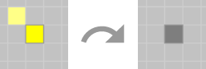
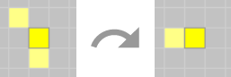
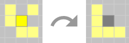
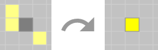
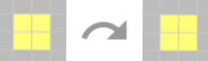

FPS: |
Population: |
Generation:
Underpopulation - If a dead cell has zero to one (0 - 1) living neighbouring cells will die off.  Survival - If a cell is alive and has two to three (2 - 3) living neighbouring cells, it will remain alive or stable.  Overpopulation - If a living cell has more than three (4+) neighbouring cells, it will die off.  Zombification - If a dead cell has three (3) living neighbours, it comes to life.  Stable - In some cases, a cell may satisfy all four rules and still not change states in the next generation.  You can choose to run each generation at a fast rate creating an animation of frames, or simply click through each generation to better understand the cell’s rules